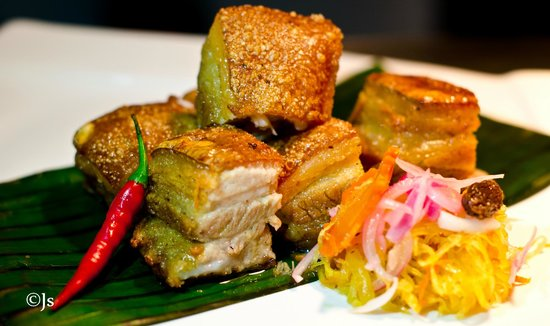
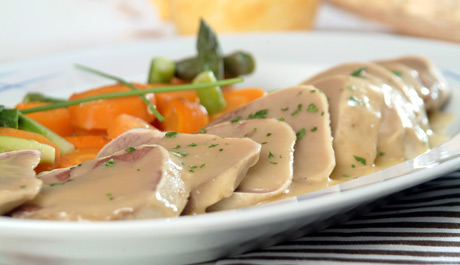

Lechon Kawali
You can marinated this in 24 hours with water,onion and herbs then you can fry into oil or oven.

Lengua with White sauce
The tonge of the pig will put waterboil until become tender then a white sauce with a creamer taste and delite.

Baby Back tibs
Marinated with a special suace also herbs then oven four 1/2 hours.